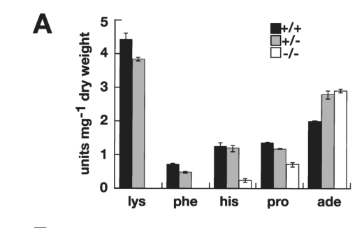

ER membrane packaging chaperone in Candida albicans. CSH3 is a functional and structural homolog of S. cerevisiae Shr3p, an ER-resident membrane protein with 4 transmembrane helices and the SHR3_chaperone Pfam domain (PF08229). CSH3/Shr3p is specifically required for proper folding and ER exit of amino acid permeases. A csh3-delta/csh3-delta null mutant has reduced amino acid uptake capacity and is unable to switch morphologies in response to inducing amino acids (PMID:14756779). CSH3 haploinsufficiency impairs amino acid uptake and virulence in a mouse model. CSH3 is not a small heat shock protein or general unfolded protein binder; it is a specialized ER membrane chaperone for amino acid transporter biogenesis.
| GO Term | Evidence | Action | Reason |
|---|---|---|---|
|
GO:0005789
endoplasmic reticulum membrane
|
IBA
GO_REF:0000033 |
ACCEPT |
Summary: IBA annotation for ER membrane localization. CSH3 is an integral ER membrane protein with 4 transmembrane helices, consistent with its S. cerevisiae Shr3p ortholog.
Reason: ER membrane localization is a core feature of CSH3. The protein has 4 predicted transmembrane helices (UniProt) and the SHR3_chaperone domain. PMID:14756779 demonstrates ER localization by IDA. The IBA annotation is well supported.
|
|
GO:0006888
endoplasmic reticulum to Golgi vesicle-mediated transport
|
IBA
GO_REF:0000033 |
ACCEPT |
Summary: IBA annotation for ER-to-Golgi transport. CSH3/Shr3p assists amino acid permeases in proper folding so they can be packaged into COPII vesicles for ER-to-Golgi transport.
Reason: ER-to-Golgi transport is a direct consequence of CSH3's core function as a packaging chaperone. Shr3p is specifically required for proper folding of amino acid permeases so they can exit the ER via COPII vesicles. This is well established for the Shr3 family and CSH3 is a functional ortholog (PMID:14756779).
Supporting Evidence:
file:CANAL/CSH3/CSH3-deep-research-falcon.md
Shr3-family proteins are specialized ER membrane chaperones that are required for efficient ER exit and plasma membrane localization of a restricted client class (notably AAPs).
|
|
GO:0051082
unfolded protein binding
|
IBA
GO_REF:0000033 |
MODIFY |
Summary: IBA annotation for unfolded protein binding. GO:0051082 is proposed for obsoletion. CSH3 is not a general unfolded protein binder; it is a specialized ER membrane chaperone for amino acid permeases.
Reason: GO:0051082 is being obsoleted. CSH3/Shr3p is an ER membrane packaging chaperone that specifically assists in the folding of amino acid permeases in the ER membrane. It does not broadly bind unfolded proteins. The appropriate replacement is GO:0044183 "protein folding chaperone" which captures the chaperone function of assisting protein folding. Note that GO:0140309 "unfolded protein carrier activity" would not be appropriate because CSH3/Shr3p does not carry/escort proteins between compartments; rather, it assists in folding within the ER membrane.
Proposed replacements:
protein folding chaperone
Supporting Evidence:
file:CANAL/CSH3/CSH3-deep-research-falcon.md
Csh3p is not a transporter and not an enzyme; instead, it is best understood as a fungal ER membrane "packaging/folding chaperone" whose primary role is to enable the proper biogenesis and ER exit of amino-acid permeases.
|
|
GO:0005783
endoplasmic reticulum
|
IDA
PMID:14756779 An ER packaging chaperone determines the amino acid uptake c... |
ACCEPT |
Summary: IDA annotation for ER localization from the key characterization paper.
Reason: ER localization is directly demonstrated. CSH3 is an integral ER membrane protein. PMID:14756779 is the key paper characterizing CSH3 as a functional homolog of Shr3p in C. albicans.
Supporting Evidence:
PMID:14756779
The Candida albicans CSH3 gene encodes a functional and structural homologue of Shr3p, a yeast protein that is specifically required for proper uptake and sensing of extracellular amino acids in Saccharomyces cerevisiae.
|
|
GO:0005886
plasma membrane
|
IDA
PMID:19824013 Analysis of Candida albicans plasma membrane proteome. |
REMOVE |
Summary: IDA annotation for plasma membrane localization from a C. albicans plasma membrane proteome study. The available evidence does not support plasma membrane localization as the site of CSH3 function.
Reason: PMID:19824013 is a broad subproteomic survey that identified many membrane proteins, including proteins with unknown membrane localization. In contrast, the CSH3-focused literature identifies CSH3 as a Shr3-family ER membrane packaging/folding chaperone, and a functional Csh3p-GFP fusion localizes to the perinuclear rim and ER-like cytoplasmic network. The strongest interpretation is that CSH3 acts in the ER to enable plasma membrane localization of amino acid permease clients; CSH3 itself should not be annotated as a plasma membrane protein.
Supporting Evidence:
PMID:19824013
a total of 214 membrane proteins were identified, including 41 already described as plasma membrane proteins, 20 plasma membrane associated proteins, and 22 proteins with unknown membrane localisation.
file:CANAL/CSH3/CSH3-deep-research-falcon.md
A functional Csh3p-GFP fusion shows perinuclear rim and ER-like cytoplasmic network fluorescence, consistent with endoplasmic reticulum localization.
|
|
GO:0030447
filamentous growth
|
IMP
PMID:14756779 An ER packaging chaperone determines the amino acid uptake c... |
KEEP AS NON CORE |
Summary: IMP annotation for filamentous growth. csh3-delta mutants are unable to switch morphologies on solid and liquid media.
Reason: Filamentous growth defect is a downstream phenotypic consequence of impaired amino acid sensing/uptake due to loss of CSH3 function. The paper shows the csh3-delta/csh3-delta null mutant "is unable to switch morphologies on solid and in liquid media in response to inducing amino acids" (PMID:14756779). This is not a direct molecular function of CSH3 but a consequence of its role in amino acid permease biogenesis.
Supporting Evidence:
PMID:14756779
A Candida csh3delta/csh3delta null mutant has a reduced capacity to take up amino acids, and is unable to switch morphologies on solid and in liquid media in response to inducing amino acids
|
|
GO:0031669
cellular response to nutrient levels
|
IMP
PMID:16227594 Divergence of Stp1 and Stp2 transcription factors in Candida... |
KEEP AS NON CORE |
Summary: IMP annotation for cellular response to nutrient levels from the amino acid sensing/SPS pathway literature.
Reason: CSH3 is functionally upstream of amino-acid sensing and nutrient response because it enables ER folding/exit of amino acid permeases and likely affects localization of the Ssy1-like amino acid sensor. This supports a nutrient-response phenotype, but the direct function remains ER membrane packaging/folding of permease clients rather than a nutrient-response signaling activity.
Supporting Evidence:
PMID:16227594
Candida albicans possesses a plasma membrane-localized sensor of extracellular amino acids.
PMID:16227594
The shorter active form of Stp2 activates genes required for amino acid uptake.
file:CANAL/CSH3/CSH3-deep-research-falcon.md
Csh3p functions upstream of amino acid uptake and intersects the SPS amino-acid sensing pathway because proper localization of AAPs, and likely Ssy1, is required for extracellular amino-acid responses.
|
|
GO:0034605
cellular response to heat
|
IMP
PMID:14756779 An ER packaging chaperone determines the amino acid uptake c... |
KEEP AS NON CORE |
Summary: IMP annotation for heat response from the CSH3 characterization paper.
Reason: Heat response is likely a downstream phenotypic consequence of impaired amino acid permease folding. The csh3-delta mutant may show heat sensitivity due to general ER stress from misfolded membrane proteins. Not a core function.
|
|
GO:0036168
filamentous growth of a population of unicellular organisms in response to heat
|
IMP
PMID:14756779 An ER packaging chaperone determines the amino acid uptake c... |
KEEP AS NON CORE |
Summary: IMP annotation for heat-induced filamentous growth from the CSH3 characterization paper.
Reason: This is a specific manifestation of the morphological switching defect of csh3-delta mutants. The inability to undergo filamentous growth in response to heat is a downstream consequence of impaired amino acid sensing/uptake. Not a core function.
|
|
GO:0036178
filamentous growth of a population of unicellular organisms in response to neutral pH
|
IMP
PMID:14756779 An ER packaging chaperone determines the amino acid uptake c... |
KEEP AS NON CORE |
Summary: IMP annotation for pH-induced filamentous growth.
Reason: Another specific condition under which csh3-delta mutants fail to undergo morphological switching. Downstream consequence of amino acid permease biogenesis defect. Not a core function.
|
|
GO:0036180
filamentous growth of a population of unicellular organisms in response to biotic stimulus
|
IMP
PMID:14756779 An ER packaging chaperone determines the amino acid uptake c... |
KEEP AS NON CORE |
Summary: IMP annotation for biotic stimulus-induced filamentous growth.
Reason: Same rationale as other filamentous growth annotations -- downstream phenotypic consequence of impaired amino acid permease biogenesis. Not a core function.
|
|
GO:0036187
cell growth mode switching, budding to filamentous
|
IMP
PMID:14756779 An ER packaging chaperone determines the amino acid uptake c... |
KEEP AS NON CORE |
Summary: IMP annotation for budding-to-filamentous growth switching.
Reason: Morphological switching defect is a downstream consequence of CSH3's role in amino acid permease biogenesis. Not a core function.
Supporting Evidence:
PMID:14756779
A Candida csh3delta/csh3delta null mutant has a reduced capacity to take up amino acids, and is unable to switch morphologies on solid and in liquid media in response to inducing amino acids.
|
|
GO:0036244
cellular response to neutral pH
|
IMP
PMID:14756779 An ER packaging chaperone determines the amino acid uptake c... |
KEEP AS NON CORE |
Summary: IMP annotation for response to neutral pH.
Reason: Downstream phenotypic effect of impaired amino acid permease biogenesis. Not a core function.
|
|
GO:0043090
amino acid import
|
IMP
PMID:14756779 An ER packaging chaperone determines the amino acid uptake c... |
ACCEPT |
Summary: IMP annotation for amino acid import. The csh3-delta mutant has reduced amino acid uptake capacity.
Reason: Amino acid import is directly affected by loss of CSH3 function because CSH3 is required for proper folding and ER exit of amino acid permeases. This is a well-established, direct consequence of the core chaperone function and is the key phenotype described in PMID:14756779.
Supporting Evidence:
PMID:14756779
A Candida csh3delta/csh3delta null mutant has a reduced capacity to take up amino acids, and is unable to switch morphologies on solid and in liquid media in response to inducing amino acids
file:CANAL/CSH3/CSH3-deep-research-falcon.md
Direct C. albicans genetic and physiological analysis indicates CSH3 is required for high-capacity amino acid uptake, consistent with impaired functional expression and/or plasma membrane localization of multiple AAPs in its absence.
|
|
GO:0051082
unfolded protein binding
|
ISS
PMID:14756779 An ER packaging chaperone determines the amino acid uptake c... |
MODIFY |
Summary: ISS annotation for unfolded protein binding by sequence similarity to S. cerevisiae Shr3p. GO:0051082 is proposed for obsoletion.
Reason: Same rationale as the IBA annotation. GO:0051082 is being obsoleted. CSH3/Shr3p is a specialized ER membrane chaperone for amino acid permeases, not a general unfolded protein binder. Replace with GO:0044183 "protein folding chaperone."
Proposed replacements:
protein folding chaperone
|
|
GO:0051082
unfolded protein binding
|
IGI
PMID:14756779 An ER packaging chaperone determines the amino acid uptake c... |
MODIFY |
Summary: IGI annotation for unfolded protein binding based on genetic interaction with S. cerevisiae SHR3. GO:0051082 is proposed for obsoletion.
Reason: Same rationale as the IBA and ISS annotations. GO:0051082 is being obsoleted. Replace with GO:0044183 "protein folding chaperone." The genetic interaction evidence supports the role of CSH3 as a protein folding chaperone for amino acid permeases.
Proposed replacements:
protein folding chaperone
|
|
GO:1900436
positive regulation of filamentous growth of a population of unicellular organisms in response to starvation
|
IMP
PMID:14756779 An ER packaging chaperone determines the amino acid uptake c... |
KEEP AS NON CORE |
Summary: IMP annotation for positive regulation of starvation-induced filamentous growth.
Reason: Downstream phenotypic consequence of impaired amino acid sensing/uptake due to loss of CSH3 function. Not a core molecular function.
|
The research report should be a detailed narrative explaining the function, biological processes, and localization of the gene product. Citations should be given for all claims.
You should prioritize authoritative reviews and primary scientific literature when conducting research. You can supplement
this with annotations you find in gene/protein databases, but these can be outdated or inaccurate.
We are specifically interested in the primary function of the gene - for enzymes, what reaction is catalyzed, and what is the substrate specificity? For transporters, what is the substrate? For structural proteins or adapters, what is the broader structural role? For signaling molecules, what is the role in the pathway.
We are interested in where in or outside the cell the gene product carries out its function.
We are also interested in the signaling or biochemical pathways in which the gene functions. We are less interested in broad pleiotropic effects, except where these elucidate the precise role.
Include evidence where possible. We are interested in both experimental evidence as well as inference from structure, evolution, or bioinformatic analysis. Precise studies should be prioritized over high-throughput, where available.
The target protein is Csh3p, encoded by CSH3 in Candida albicans strain SC5314 (yeast). The gene/protein was experimentally characterized as a functional and structural homolog of Saccharomyces cerevisiae Shr3p, an ER-resident membrane factor required for efficient functional expression of amino-acid permeases (AAPs). The C. albicans protein shares reported sequence similarity with Shr3p and is predicted to be an integral membrane protein with four transmembrane segments, consistent with the Shr3/Psh3 (PF08229; IPR013248) family assignment provided in the UniProt context. (martinez2004anerpackaging pages 2-3, martinez2004anerpackaging pages 1-2)
Csh3p is not a transporter and not an enzyme; instead, it is best understood as a fungal ER membrane “packaging/folding chaperone” (also called a membrane-localized chaperone/escort) whose primary role is to enable the proper biogenesis and ER exit of a specific class of multipass plasma-membrane proteins—most prominently amino-acid permeases (AAPs). In the absence of Shr3-family proteins, client permeases are inserted into the ER membrane but fail to achieve productive folding/assembly, are excluded from ER export vesicles, and can be diverted to ER quality-control and degradation pathways. (martinez2004anerpackaging pages 1-2, silao2021aminoacidsensing pages 6-7, kota2007membranechaperoneshr3 pages 1-2, kota2007membranechaperoneshr3 pages 2-3)
Work in S. cerevisiae established the mechanistic paradigm for this family. Shr3 is an ER membrane-localized factor required specifically for ER-to-plasma-membrane localization of multiple AAPs, while many other secretory and membrane proteins traffic normally, indicating substrate-class specificity. (ljungdahl1992shr3anovel pages 2-3, ljungdahl1992shr3anovel pages 9-11)
Mechanistically, Shr3-family proteins:
- Assist early folding/assembly of nascent multipass transporters during co-translational membrane insertion.
- Help prevent nonproductive transmembrane-segment interactions and aggregation in the ER.
- Couple productive folding to COPII-mediated packaging and ER exit.
- Intersect with ER quality control; when Shr3 is absent, aggregated permeases can be targeted by ER-associated degradation (ERAD) pathways. (kota2007membranechaperoneshr3 pages 7-8, kota2007membranechaperoneshr3 pages 1-2, kota2007membranechaperoneshr3 pages 2-3, kota2007membranechaperoneshr3 pages 11-11)
Because C. albicans Csh3p is a functional homolog that complements S. cerevisiae shr3Δ phenotypes, these mechanistic principles are widely used as structure/function inference for Csh3p in C. albicans. (martinez2004anerpackaging pages 2-3, martinez2004anerpackaging pages 8-9)
A functional Csh3p–GFP fusion shows perinuclear rim and ER-like cytoplasmic network fluorescence, consistent with endoplasmic reticulum localization. (martinez2004anerpackaging pages 3-5, martinez2004anerpackaging media b7665d6c)
Direct C. albicans genetic and physiological analysis indicates CSH3 is required for high-capacity amino acid uptake, consistent with impaired functional expression and/or plasma membrane localization of multiple AAPs in its absence. A csh3Δ/csh3Δ mutant showed a decreased capacity to transport each amino acid tested, with some uptake phenotypes being extreme (e.g., lysine and phenylalanine uptake undetectable in the described assays). (martinez2004anerpackaging pages 3-5, martinez2004anerpackaging media b7665d6c)
Csh3p also shows gene-dosage sensitivity: CSH3/csh3Δ heterozygotes can exhibit uptake defects even when some signaling responses appear intact, supporting a model where Csh3p is rate-limiting for maximal permease output. (martinez2004anerpackaging pages 9-11, martinez2004anerpackaging pages 3-5)
C. albicans contains homologs of the SPS amino-acid sensing system (Ssy1–Ptr3–Ssy5), which activates transcriptional programs for amino-acid uptake via proteolytic processing of transcription factors (Stp1/Stp2) and induction of AAP genes. In a 2023 nutrient-acquisition review, this system is summarized and notes that AAPs are co-translated into the ER and are shuttled onward via the ER chaperone Shr3 (not necessarily distinguishing Shr3 vs. Csh3 by name in the excerpt), consistent with the conserved trafficking paradigm. (garbe2023nutrientacquisitionand pages 21-25)
In C. albicans, Martínez & Ljungdahl explicitly predict that loss of Csh3p will retain AAPs in the ER (lowering permease abundance at the plasma membrane) and, because of the SPS pathway’s reliance on a plasma-membrane sensor (Ssy1-like), that the Ssy1 homolog may also be retained in the ER, thereby attenuating downstream SPS signaling and AAP gene expression. (martinez2004anerpackaging pages 8-9)
In uptake assays using radiolabeled substrates, the csh3Δ/csh3Δ mutant exhibited:
- Undetectable lysine and phenylalanine uptake
- Greatly diminished histidine and proline uptake
- Increased adenine uptake (a specificity control suggesting the defect is not a global uptake collapse) (martinez2004anerpackaging pages 3-5, martinez2004anerpackaging media b7665d6c)
Methods/statistics context reported in the primary study include initial uptake-rate measurements using 14C-labeled amino acids, and uptake activity expressed in nmol·min⁻¹ units; experimental details include buffering conditions and glucose supplementation. (martinez2004anerpackaging pages 12-13)
A central biological implication is that amino-acid-induced morphogenic switching (filamentation) depends on CSH3. csh3Δ/csh3Δ mutants show severely reduced ability to switch morphologies in response to amino-acid stimuli, while responses to non–amino-acid cues are comparatively preserved, supporting functional specificity tied to amino-acid uptake/sensing circuits. (martinez2004anerpackaging pages 9-11, martinez2004anerpackaging pages 8-9)
In a mouse intravenous infection model, CSH3 is required for efficient virulence:
- Wild-type CSH3/CSH3 C. albicans killed hosts rapidly (reported as all mice dead within 9 days in one comparison; an alternate wild-type comparator killed all by day 5).
- Both CSH3/csh3Δ heterozygous and csh3Δ/csh3Δ homozygous strains were markedly attenuated, with ~50% of mice alive at day 16 and some animals surviving to the end of a 30-day observation period. (martinez2004anerpackaging pages 8-9)
These findings directly connect an ER chaperone for nutrient transporters to pathogenic fitness, and they support the authors’ inference that C. albicans uses amino acids (likely as nitrogen sources) during mammalian infection and that high-capacity amino-acid uptake is a virulence-enabling trait. (martinez2004anerpackaging pages 8-9, martinez2004anerpackaging pages 1-2)
A 2023 review on nutrient acquisition and metabolic adaptation in C. albicans summarizes the SPS signaling cascade and places ER chaperone–mediated trafficking of AAPs (via Shr3-family function) as an enabling layer for amino-acid uptake programs. While the excerpted sections do not discuss CSH3 specifically by name or provide new quantitative Csh3-specific data, the inclusion of Shr3-mediated trafficking in a contemporary virulence-metabolism synthesis indicates ongoing relevance of this mechanism as a core concept in the field. (garbe2023nutrientacquisitionand pages 21-25)
Although not C. albicans-specific, mechanistic work in the Shr3 family continues to refine concepts of co-translational assistance, transient chaperone–substrate interactions, and integration with quality-control routes (ERAD). A 2019 review consolidates these ideas and explicitly lists orthologs including Csh3 in C. albicans, situating it among ER factors that link folding/assembly to ER export. (diallinas2019transportermembranetraffic pages 2-4)
Limitation of the present evidence set: a 2023 Journal of Cell Biology primary paper on Shr3 is known to exist (metadata observed during search), but its full text was not successfully retrieved in the current tool context; therefore, I do not quote or rely on its specific claims here. (unretrieved in this run)
Because Csh3p is required for functional expression of multiple AAPs, it acts as a bottleneck control point for amino-acid uptake capacity. In the context of infection biology, the mouse systemic infection attenuation observed for both heterozygous and homozygous mutants suggests that partial reductions in this node can have large effects on host-pathogen outcomes. (martinez2004anerpackaging pages 8-9, martinez2004anerpackaging pages 9-11)
The primary literature emphasizes that Csh3p/Shr3 homologs are fungal-specific and required for efficient permease biogenesis and virulence-associated growth. This makes Shr3-family chaperones conceptually attractive as antifungal target classes (pathogen-selective membrane biogenesis factors), although the evidence assembled here does not include direct drug-development studies targeting Csh3p. (martinez2004anerpackaging pages 9-11, diallinas2019transportermembranetraffic pages 2-4)
Across primary and review literature, the expert consensus is that Shr3-family proteins are specialized ER membrane chaperones that:
- Are required for efficient ER exit and plasma membrane localization of a restricted client class (notably AAPs)
- Function at the interface of folding/assembly, quality control (ERAD), and COPII packaging
- Are conserved across fungi with orthologs including Csh3 (Candida) and Psh3 (Schizosaccharomyces), reinforcing functional inference for less extensively characterized family members. (diallinas2019transportermembranetraffic pages 2-4, ljungdahl1992shr3anovel pages 2-3, ljungdahl1992shr3anovel pages 9-11)
| Aspect | Key evidence/notes | Key sources |
|---|---|---|
| identity/domains | Candida albicans CSH3 encodes Csh3p, a functional and structural homolog of Saccharomyces cerevisiae Shr3p. The reported protein has four transmembrane segments, ~36% identity / 48% similarity to S. cerevisiae Shr3p, matching the UniProt-assigned Shr3/Psh3 family context rather than an unrelated CSH3 symbol from another organism. (martinez2004anerpackaging pages 2-3, martinez2004anerpackaging pages 1-2) | Martínez & Ljungdahl 2004, DOI: https://doi.org/10.1046/j.1365-2958.2003.03845.x; Ljungdahl et al. 1992, DOI: https://doi.org/10.1016/0092-8674(92)90515-e |
| localization | Functional Csh3p-GFP localizes to the perinuclear rim and a filamentous cytoplasmic network, consistent with the endoplasmic reticulum (ER). Reviews and comparative studies consistently describe Csh3/Shr3 proteins as ER-membrane-localized chaperones. (martinez2004anerpackaging pages 3-5, silao2021aminoacidsensing pages 6-7, martinez2004anerpackaging media b7665d6c) | Martínez & Ljungdahl 2004, DOI: https://doi.org/10.1046/j.1365-2958.2003.03845.x; Silao & Ljungdahl 2021, DOI: https://doi.org/10.3390/pathogens11010005 |
| molecular function | Csh3p is not an enzyme or transporter; it is a specialized ER packaging/folding chaperone required for the productive biogenesis of amino acid permeases (AAPs). By analogy with Shr3-family mechanistic work, it assists early folding/assembly of multipass transporters, promotes their COPII-dependent ER exit, and helps prevent aggregation and premature ERAD. (martinez2004anerpackaging pages 1-2, kota2007membranechaperoneshr3 pages 7-8, kota2007membranechaperoneshr3 pages 1-2, diallinas2019transportermembranetraffic pages 2-4) | Martínez & Ljungdahl 2004, DOI: https://doi.org/10.1046/j.1365-2958.2003.03845.x; Kota et al. 2007, DOI: https://doi.org/10.1083/jcb.200612100; Diallinas & Martzoukou 2019, DOI: https://doi.org/10.1111/febs.15078 |
| client proteins | The best-supported clients are the AAP family in C. albicans; the genome was noted to encode ~22 AAP-related ORFs. The literature also predicts dependence of the Ssy1 amino-acid sensor/permease-like component on Csh3 for proper plasma-membrane localization, consistent with Shr3-family substrate specificity for related multipass membrane proteins. (martinez2004anerpackaging pages 1-2, martinez2004anerpackaging pages 8-9, garbe2023nutrientacquisitionand pages 21-25) | Martínez & Ljungdahl 2004, DOI: https://doi.org/10.1046/j.1365-2958.2003.03845.x; Garbe 2023 (review context summarized in available text) |
| pathway context | Csh3p functions upstream of amino acid uptake and intersects the SPS amino-acid sensing pathway because proper localization of AAPs, and likely Ssy1, is required for extracellular amino-acid responses. In the broader model, extracellular amino acids activate Ssy1-Ptr3-Ssy5, causing Stp1/Stp2 processing and induction of AAP genes; Csh3 is needed so these induced permeases become functional at the plasma membrane. (martinez2004anerpackaging pages 8-9, garbe2023nutrientacquisitionand pages 21-25, silao2021aminoacidsensing pages 6-7) | Martínez & Ljungdahl 2004, DOI: https://doi.org/10.1046/j.1365-2958.2003.03845.x; Silao & Ljungdahl 2021, DOI: https://doi.org/10.3390/pathogens11010005 |
| phenotypes | csh3Δ/csh3Δ mutants show broad defects in amino-acid utilization and uptake, including inability to efficiently use several amino acids as nitrogen sources and failure to undergo amino-acid-induced filamentation. CSH3/csh3Δ heterozygotes are haploinsufficient for high-capacity uptake, showing intermediate uptake defects while often retaining amino-acid-induced morphogenetic signaling. (martinez2004anerpackaging pages 9-11, martinez2004anerpackaging pages 3-5, martinez2004anerpackaging pages 1-2) | Martínez & Ljungdahl 2004, DOI: https://doi.org/10.1046/j.1365-2958.2003.03845.x |
| virulence data | In a mouse intravenous infection model using 1 × 10^6 cells per inoculum, wild-type CSH3/CSH3 strains killed all mice rapidly, whereas both heterozygous and homozygous csh3 mutants were markedly attenuated. Reported summary outcomes include wild type killing all mice within 9 days (one wild-type comparator by day 5), while mutant groups showed prolonged survival, with 50% alive at day 16 and some animals surviving to day 30. (martinez2004anerpackaging pages 8-9) | Martínez & Ljungdahl 2004, DOI: https://doi.org/10.1046/j.1365-2958.2003.03845.x |
| quantitative measures | Uptake assays measured initial rates with 14C-labeled amino acids at 50 mM substrate and reported activity in nmol min^-1. Quantitatively, the null mutant had undetectable lysine and phenylalanine uptake, greatly diminished histidine and proline uptake, and even increased adenine uptake; figure-based evidence also shows gene-dosage effects in heterozygotes and a 5 h proline-uptake induction time course. (martinez2004anerpackaging pages 3-5, martinez2004anerpackaging pages 12-13, martinez2004anerpackaging media b7665d6c) | Martínez & Ljungdahl 2004, DOI: https://doi.org/10.1046/j.1365-2958.2003.03845.x |
Table: This table summarizes the experimentally supported functional annotation of Candida albicans Csh3p (CSH3; UniProt A0A1D8PLU5), including identity, localization, mechanism, pathway placement, and phenotype/virulence evidence. It is useful as a concise evidence map for interpreting this Shr3-family ER membrane chaperone.
References
(martinez2004anerpackaging pages 2-3): Paula Martínez and Per O. Ljungdahl. An er packaging chaperone determines the amino acid uptake capacity and virulence of candida albicans. Molecular Microbiology, 51:371-384, Jan 2004. URL: https://doi.org/10.1046/j.1365-2958.2003.03845.x, doi:10.1046/j.1365-2958.2003.03845.x. This article has 74 citations and is from a domain leading peer-reviewed journal.
(martinez2004anerpackaging pages 1-2): Paula Martínez and Per O. Ljungdahl. An er packaging chaperone determines the amino acid uptake capacity and virulence of candida albicans. Molecular Microbiology, 51:371-384, Jan 2004. URL: https://doi.org/10.1046/j.1365-2958.2003.03845.x, doi:10.1046/j.1365-2958.2003.03845.x. This article has 74 citations and is from a domain leading peer-reviewed journal.
(silao2021aminoacidsensing pages 6-7): Fitz Gerald S. Silao and Per O. Ljungdahl. Amino acid sensing and assimilation by the fungal pathogen candida albicans in the human host. Pathogens, 11:5, Dec 2021. URL: https://doi.org/10.3390/pathogens11010005, doi:10.3390/pathogens11010005. This article has 44 citations.
(kota2007membranechaperoneshr3 pages 1-2): Jhansi Kota, C. Fredrik Gilstring, and Per O. Ljungdahl. Membrane chaperone shr3 assists in folding amino acid permeases preventing precocious erad. The Journal of Cell Biology, 176:617-628, Feb 2007. URL: https://doi.org/10.1083/jcb.200612100, doi:10.1083/jcb.200612100. This article has 128 citations.
(kota2007membranechaperoneshr3 pages 2-3): Jhansi Kota, C. Fredrik Gilstring, and Per O. Ljungdahl. Membrane chaperone shr3 assists in folding amino acid permeases preventing precocious erad. The Journal of Cell Biology, 176:617-628, Feb 2007. URL: https://doi.org/10.1083/jcb.200612100, doi:10.1083/jcb.200612100. This article has 128 citations.
(ljungdahl1992shr3anovel pages 2-3): Per O. Ljungdahl, Carlos J. Gimeno, Cora A. Styles, and Gerald R. Fink. Shr3: a novel component of the secretory pathway specifically required for localization of amino acid permeases in yeast. Cell, 71:463-478, Oct 1992. URL: https://doi.org/10.1016/0092-8674(92)90515-e, doi:10.1016/0092-8674(92)90515-e. This article has 241 citations and is from a highest quality peer-reviewed journal.
(ljungdahl1992shr3anovel pages 9-11): Per O. Ljungdahl, Carlos J. Gimeno, Cora A. Styles, and Gerald R. Fink. Shr3: a novel component of the secretory pathway specifically required for localization of amino acid permeases in yeast. Cell, 71:463-478, Oct 1992. URL: https://doi.org/10.1016/0092-8674(92)90515-e, doi:10.1016/0092-8674(92)90515-e. This article has 241 citations and is from a highest quality peer-reviewed journal.
(kota2007membranechaperoneshr3 pages 7-8): Jhansi Kota, C. Fredrik Gilstring, and Per O. Ljungdahl. Membrane chaperone shr3 assists in folding amino acid permeases preventing precocious erad. The Journal of Cell Biology, 176:617-628, Feb 2007. URL: https://doi.org/10.1083/jcb.200612100, doi:10.1083/jcb.200612100. This article has 128 citations.
(kota2007membranechaperoneshr3 pages 11-11): Jhansi Kota, C. Fredrik Gilstring, and Per O. Ljungdahl. Membrane chaperone shr3 assists in folding amino acid permeases preventing precocious erad. The Journal of Cell Biology, 176:617-628, Feb 2007. URL: https://doi.org/10.1083/jcb.200612100, doi:10.1083/jcb.200612100. This article has 128 citations.
(martinez2004anerpackaging pages 8-9): Paula Martínez and Per O. Ljungdahl. An er packaging chaperone determines the amino acid uptake capacity and virulence of candida albicans. Molecular Microbiology, 51:371-384, Jan 2004. URL: https://doi.org/10.1046/j.1365-2958.2003.03845.x, doi:10.1046/j.1365-2958.2003.03845.x. This article has 74 citations and is from a domain leading peer-reviewed journal.
(martinez2004anerpackaging pages 3-5): Paula Martínez and Per O. Ljungdahl. An er packaging chaperone determines the amino acid uptake capacity and virulence of candida albicans. Molecular Microbiology, 51:371-384, Jan 2004. URL: https://doi.org/10.1046/j.1365-2958.2003.03845.x, doi:10.1046/j.1365-2958.2003.03845.x. This article has 74 citations and is from a domain leading peer-reviewed journal.
(martinez2004anerpackaging media b7665d6c): Paula Martínez and Per O. Ljungdahl. An er packaging chaperone determines the amino acid uptake capacity and virulence of candida albicans. Molecular Microbiology, 51:371-384, Jan 2004. URL: https://doi.org/10.1046/j.1365-2958.2003.03845.x, doi:10.1046/j.1365-2958.2003.03845.x. This article has 74 citations and is from a domain leading peer-reviewed journal.
(martinez2004anerpackaging pages 9-11): Paula Martínez and Per O. Ljungdahl. An er packaging chaperone determines the amino acid uptake capacity and virulence of candida albicans. Molecular Microbiology, 51:371-384, Jan 2004. URL: https://doi.org/10.1046/j.1365-2958.2003.03845.x, doi:10.1046/j.1365-2958.2003.03845.x. This article has 74 citations and is from a domain leading peer-reviewed journal.
(garbe2023nutrientacquisitionand pages 21-25): E Garbe. Nutrient acquisition and metabolic adaptation in the context of candida albicans virulence. Unknown journal, 2023.
(martinez2004anerpackaging pages 12-13): Paula Martínez and Per O. Ljungdahl. An er packaging chaperone determines the amino acid uptake capacity and virulence of candida albicans. Molecular Microbiology, 51:371-384, Jan 2004. URL: https://doi.org/10.1046/j.1365-2958.2003.03845.x, doi:10.1046/j.1365-2958.2003.03845.x. This article has 74 citations and is from a domain leading peer-reviewed journal.
(diallinas2019transportermembranetraffic pages 2-4): George Diallinas and Olga Martzoukou. Transporter membrane traffic and function: lessons from a mould. The FEBS Journal, 286:4861-4875, Dec 2019. URL: https://doi.org/10.1111/febs.15078, doi:10.1111/febs.15078. This article has 32 citations.

id: A0A1D8PLU5
gene_symbol: CSH3
product_type: PROTEIN
status: DRAFT
taxon:
id: NCBITaxon:237561
label: Candida albicans (strain SC5314 / ATCC MYA-2876)
description: >-
ER membrane packaging chaperone in Candida albicans. CSH3 is a functional and
structural homolog of S. cerevisiae Shr3p, an ER-resident membrane protein
with 4 transmembrane helices and the SHR3_chaperone Pfam domain (PF08229).
CSH3/Shr3p is specifically required for proper folding and ER exit of amino
acid permeases. A csh3-delta/csh3-delta null mutant has reduced amino acid
uptake capacity and is unable to switch morphologies in response to inducing
amino acids (PMID:14756779). CSH3 haploinsufficiency impairs amino acid uptake
and virulence in a mouse model. CSH3 is not a small heat shock protein or
general unfolded protein binder; it is a specialized ER membrane chaperone for
amino acid transporter biogenesis.
existing_annotations:
- term:
id: GO:0005789
label: endoplasmic reticulum membrane
evidence_type: IBA
original_reference_id: GO_REF:0000033
review:
summary: >-
IBA annotation for ER membrane localization. CSH3 is an integral ER
membrane protein with 4 transmembrane helices, consistent with its
S. cerevisiae Shr3p ortholog.
action: ACCEPT
reason: >-
ER membrane localization is a core feature of CSH3. The protein has 4
predicted transmembrane helices (UniProt) and the SHR3_chaperone domain.
PMID:14756779 demonstrates ER localization by IDA. The IBA annotation
is well supported.
- term:
id: GO:0006888
label: endoplasmic reticulum to Golgi vesicle-mediated transport
evidence_type: IBA
original_reference_id: GO_REF:0000033
review:
summary: >-
IBA annotation for ER-to-Golgi transport. CSH3/Shr3p assists amino acid
permeases in proper folding so they can be packaged into COPII vesicles
for ER-to-Golgi transport.
action: ACCEPT
reason: >-
ER-to-Golgi transport is a direct consequence of CSH3's core function
as a packaging chaperone. Shr3p is specifically required for proper
folding of amino acid permeases so they can exit the ER via COPII
vesicles. This is well established for the Shr3 family and CSH3 is
a functional ortholog (PMID:14756779).
additional_reference_ids:
- file:CANAL/CSH3/CSH3-deep-research-falcon.md
supported_by:
- reference_id: file:CANAL/CSH3/CSH3-deep-research-falcon.md
supporting_text: >-
Shr3-family proteins are specialized ER membrane chaperones that are
required for efficient ER exit and plasma membrane localization of a
restricted client class (notably AAPs).
- term:
id: GO:0051082
label: unfolded protein binding
evidence_type: IBA
original_reference_id: GO_REF:0000033
review:
summary: >-
IBA annotation for unfolded protein binding. GO:0051082 is proposed for
obsoletion. CSH3 is not a general unfolded protein binder; it is a
specialized ER membrane chaperone for amino acid permeases.
action: MODIFY
reason: >-
GO:0051082 is being obsoleted. CSH3/Shr3p is an ER membrane packaging
chaperone that specifically assists in the folding of amino acid permeases
in the ER membrane. It does not broadly bind unfolded proteins. The
appropriate replacement is GO:0044183 "protein folding chaperone" which
captures the chaperone function of assisting protein folding. Note that
GO:0140309 "unfolded protein carrier activity" would not be appropriate
because CSH3/Shr3p does not carry/escort proteins between compartments;
rather, it assists in folding within the ER membrane.
proposed_replacement_terms:
- id: GO:0044183
label: protein folding chaperone
additional_reference_ids:
- file:CANAL/CSH3/CSH3-deep-research-falcon.md
supported_by:
- reference_id: file:CANAL/CSH3/CSH3-deep-research-falcon.md
supporting_text: >-
Csh3p is not a transporter and not an enzyme; instead, it is best
understood as a fungal ER membrane "packaging/folding chaperone" whose
primary role is to enable the proper biogenesis and ER exit of
amino-acid permeases.
- term:
id: GO:0005783
label: endoplasmic reticulum
evidence_type: IDA
original_reference_id: PMID:14756779
review:
summary: >-
IDA annotation for ER localization from the key characterization paper.
action: ACCEPT
reason: >-
ER localization is directly demonstrated. CSH3 is an integral ER membrane
protein. PMID:14756779 is the key paper characterizing CSH3 as a
functional homolog of Shr3p in C. albicans.
supported_by:
- reference_id: PMID:14756779
supporting_text: >-
The Candida albicans CSH3 gene encodes a functional and structural
homologue of Shr3p, a yeast protein that is specifically required for
proper uptake and sensing of extracellular amino acids in Saccharomyces
cerevisiae.
- term:
id: GO:0005886
label: plasma membrane
evidence_type: IDA
original_reference_id: PMID:19824013
review:
summary: >-
IDA annotation for plasma membrane localization from a C. albicans plasma
membrane proteome study. The available evidence does not support plasma
membrane localization as the site of CSH3 function.
action: REMOVE
reason: >-
PMID:19824013 is a broad subproteomic survey that identified many membrane
proteins, including proteins with unknown membrane localization. In contrast,
the CSH3-focused literature identifies CSH3 as a Shr3-family ER membrane
packaging/folding chaperone, and a functional Csh3p-GFP fusion localizes to
the perinuclear rim and ER-like cytoplasmic network. The strongest
interpretation is that CSH3 acts in the ER to enable plasma membrane
localization of amino acid permease clients; CSH3 itself should not be
annotated as a plasma membrane protein.
additional_reference_ids:
- PMID:14756779
- file:CANAL/CSH3/CSH3-deep-research-falcon.md
supported_by:
- reference_id: PMID:19824013
supporting_text: >-
a total of 214 membrane proteins were identified, including 41 already described
as plasma membrane proteins, 20 plasma membrane associated proteins, and 22
proteins with unknown membrane localisation.
- reference_id: file:CANAL/CSH3/CSH3-deep-research-falcon.md
supporting_text: >-
A functional Csh3p-GFP fusion shows perinuclear rim and ER-like cytoplasmic
network fluorescence, consistent with endoplasmic reticulum localization.
- term:
id: GO:0030447
label: filamentous growth
evidence_type: IMP
original_reference_id: PMID:14756779
review:
summary: >-
IMP annotation for filamentous growth. csh3-delta mutants are unable
to switch morphologies on solid and liquid media.
action: KEEP_AS_NON_CORE
reason: >-
Filamentous growth defect is a downstream phenotypic consequence of
impaired amino acid sensing/uptake due to loss of CSH3 function. The
paper shows the csh3-delta/csh3-delta null mutant "is unable to switch
morphologies on solid and in liquid media in response to inducing amino
acids" (PMID:14756779). This is not a direct molecular function of CSH3
but a consequence of its role in amino acid permease biogenesis.
supported_by:
- reference_id: PMID:14756779
supporting_text: >-
A Candida csh3delta/csh3delta null mutant has a reduced capacity to
take up amino acids, and is unable to switch morphologies on solid
and in liquid media in response to inducing amino acids
- term:
id: GO:0031669
label: cellular response to nutrient levels
evidence_type: IMP
original_reference_id: PMID:16227594
review:
summary: >-
IMP annotation for cellular response to nutrient levels from the amino
acid sensing/SPS pathway literature.
action: KEEP_AS_NON_CORE
reason: >-
CSH3 is functionally upstream of amino-acid sensing and nutrient response
because it enables ER folding/exit of amino acid permeases and likely
affects localization of the Ssy1-like amino acid sensor. This supports a
nutrient-response phenotype, but the direct function remains ER membrane
packaging/folding of permease clients rather than a nutrient-response
signaling activity.
additional_reference_ids:
- file:CANAL/CSH3/CSH3-deep-research-falcon.md
supported_by:
- reference_id: PMID:16227594
supporting_text: >-
Candida albicans possesses a plasma membrane-localized sensor of extracellular
amino acids.
- reference_id: PMID:16227594
supporting_text: >-
The shorter active form of Stp2 activates genes required for amino acid uptake.
- reference_id: file:CANAL/CSH3/CSH3-deep-research-falcon.md
supporting_text: >-
Csh3p functions upstream of amino acid uptake and intersects the SPS amino-acid
sensing pathway because proper localization of AAPs, and likely Ssy1, is required
for extracellular amino-acid responses.
- term:
id: GO:0034605
label: cellular response to heat
evidence_type: IMP
original_reference_id: PMID:14756779
review:
summary: >-
IMP annotation for heat response from the CSH3 characterization paper.
action: KEEP_AS_NON_CORE
reason: >-
Heat response is likely a downstream phenotypic consequence of
impaired amino acid permease folding. The csh3-delta mutant may show
heat sensitivity due to general ER stress from misfolded membrane
proteins. Not a core function.
- term:
id: GO:0036168
label: filamentous growth of a population of unicellular organisms in response
to heat
evidence_type: IMP
original_reference_id: PMID:14756779
review:
summary: >-
IMP annotation for heat-induced filamentous growth from the CSH3
characterization paper.
action: KEEP_AS_NON_CORE
reason: >-
This is a specific manifestation of the morphological switching defect
of csh3-delta mutants. The inability to undergo filamentous growth in
response to heat is a downstream consequence of impaired amino acid
sensing/uptake. Not a core function.
- term:
id: GO:0036178
label: filamentous growth of a population of unicellular organisms in response
to neutral pH
evidence_type: IMP
original_reference_id: PMID:14756779
review:
summary: >-
IMP annotation for pH-induced filamentous growth.
action: KEEP_AS_NON_CORE
reason: >-
Another specific condition under which csh3-delta mutants fail to
undergo morphological switching. Downstream consequence of amino acid
permease biogenesis defect. Not a core function.
- term:
id: GO:0036180
label: filamentous growth of a population of unicellular organisms in response
to biotic stimulus
evidence_type: IMP
original_reference_id: PMID:14756779
review:
summary: >-
IMP annotation for biotic stimulus-induced filamentous growth.
action: KEEP_AS_NON_CORE
reason: >-
Same rationale as other filamentous growth annotations -- downstream
phenotypic consequence of impaired amino acid permease biogenesis.
Not a core function.
- term:
id: GO:0036187
label: cell growth mode switching, budding to filamentous
evidence_type: IMP
original_reference_id: PMID:14756779
review:
summary: >-
IMP annotation for budding-to-filamentous growth switching.
action: KEEP_AS_NON_CORE
reason: >-
Morphological switching defect is a downstream consequence of CSH3's
role in amino acid permease biogenesis. Not a core function.
supported_by:
- reference_id: PMID:14756779
supporting_text: >-
A Candida csh3delta/csh3delta null mutant has a reduced capacity to
take up amino acids, and is unable to switch morphologies on solid
and in liquid media in response to inducing amino acids.
- term:
id: GO:0036244
label: cellular response to neutral pH
evidence_type: IMP
original_reference_id: PMID:14756779
review:
summary: >-
IMP annotation for response to neutral pH.
action: KEEP_AS_NON_CORE
reason: >-
Downstream phenotypic effect of impaired amino acid permease
biogenesis. Not a core function.
- term:
id: GO:0043090
label: amino acid import
evidence_type: IMP
original_reference_id: PMID:14756779
review:
summary: >-
IMP annotation for amino acid import. The csh3-delta mutant has reduced
amino acid uptake capacity.
action: ACCEPT
reason: >-
Amino acid import is directly affected by loss of CSH3 function because
CSH3 is required for proper folding and ER exit of amino acid permeases.
This is a well-established, direct consequence of the core chaperone
function and is the key phenotype described in PMID:14756779.
additional_reference_ids:
- file:CANAL/CSH3/CSH3-deep-research-falcon.md
supported_by:
- reference_id: PMID:14756779
supporting_text: >-
A Candida csh3delta/csh3delta null mutant has a reduced capacity to
take up amino acids, and is unable to switch morphologies on solid
and in liquid media in response to inducing amino acids
- reference_id: file:CANAL/CSH3/CSH3-deep-research-falcon.md
supporting_text: >-
Direct C. albicans genetic and physiological analysis indicates CSH3 is
required for high-capacity amino acid uptake, consistent with impaired
functional expression and/or plasma membrane localization of multiple
AAPs in its absence.
- term:
id: GO:0051082
label: unfolded protein binding
evidence_type: ISS
original_reference_id: PMID:14756779
review:
summary: >-
ISS annotation for unfolded protein binding by sequence similarity to
S. cerevisiae Shr3p. GO:0051082 is proposed for obsoletion.
action: MODIFY
reason: >-
Same rationale as the IBA annotation. GO:0051082 is being obsoleted.
CSH3/Shr3p is a specialized ER membrane chaperone for amino acid
permeases, not a general unfolded protein binder. Replace with
GO:0044183 "protein folding chaperone."
proposed_replacement_terms:
- id: GO:0044183
label: protein folding chaperone
- term:
id: GO:0051082
label: unfolded protein binding
evidence_type: IGI
original_reference_id: PMID:14756779
review:
summary: >-
IGI annotation for unfolded protein binding based on genetic interaction
with S. cerevisiae SHR3. GO:0051082 is proposed for obsoletion.
action: MODIFY
reason: >-
Same rationale as the IBA and ISS annotations. GO:0051082 is being
obsoleted. Replace with GO:0044183 "protein folding chaperone." The
genetic interaction evidence supports the role of CSH3 as a protein
folding chaperone for amino acid permeases.
proposed_replacement_terms:
- id: GO:0044183
label: protein folding chaperone
- term:
id: GO:1900436
label: positive regulation of filamentous growth of a population of unicellular
organisms in response to starvation
evidence_type: IMP
original_reference_id: PMID:14756779
review:
summary: >-
IMP annotation for positive regulation of starvation-induced filamentous
growth.
action: KEEP_AS_NON_CORE
reason: >-
Downstream phenotypic consequence of impaired amino acid
sensing/uptake due to loss of CSH3 function. Not a core molecular
function.
references:
- id: GO_REF:0000033
title: Annotation inferences using phylogenetic trees
findings: []
- id: PMID:14756779
title: An ER packaging chaperone determines the amino acid uptake capacity and virulence
of Candida albicans.
findings:
- statement: >-
CSH3 is a functional and structural homolog of S. cerevisiae Shr3p.
supporting_text: >-
The Candida albicans CSH3 gene encodes a functional and structural
homologue of Shr3p, a yeast protein that is specifically required for
proper uptake and sensing of extracellular amino acids in Saccharomyces
cerevisiae.
- statement: >-
csh3-delta mutant has reduced amino acid uptake and impaired
morphological switching.
supporting_text: >-
A Candida csh3delta/csh3delta null mutant has a reduced capacity to
take up amino acids, and is unable to switch morphologies on solid
and in liquid media in response to inducing amino acids.
- statement: >-
CSH3 haploinsufficiency affects virulence in mouse model.
supporting_text: >-
both CSH3/csh3delta heterozygous and csh3delta/csh3delta homozygous
strains are unable to efficiently mount virulent infections in a mouse
model.
- id: PMID:16227594
title: Divergence of Stp1 and Stp2 transcription factors in Candida albicans
places virulence factors required for proper nutrient acquisition under amino
acid control.
findings: []
- id: PMID:19824013
title: Analysis of Candida albicans plasma membrane proteome.
findings: []
- id: file:CANAL/CSH3/CSH3-deep-research-falcon.md
title: Deep research report on CSH3 (Falcon/Edison Scientific Literature)
findings:
- statement: CSH3 is a Candida albicans Shr3-family ER membrane packaging/folding chaperone that enables amino acid permease biogenesis and ER exit; the evidence supports ER membrane localization, not a cell-surface or adhesin role.
core_functions:
- description: >-
ER membrane packaging chaperone that specifically assists in the folding
and ER exit of amino acid permeases. Required for proper amino acid uptake
capacity and, consequently, for amino acid-induced morphological switching
and virulence.
molecular_function:
id: GO:0044183
label: protein folding chaperone
directly_involved_in:
- id: GO:0006888
label: endoplasmic reticulum to Golgi vesicle-mediated transport
- id: GO:0043090
label: amino acid import
locations:
- id: GO:0005789
label: endoplasmic reticulum membrane
{kind=link}